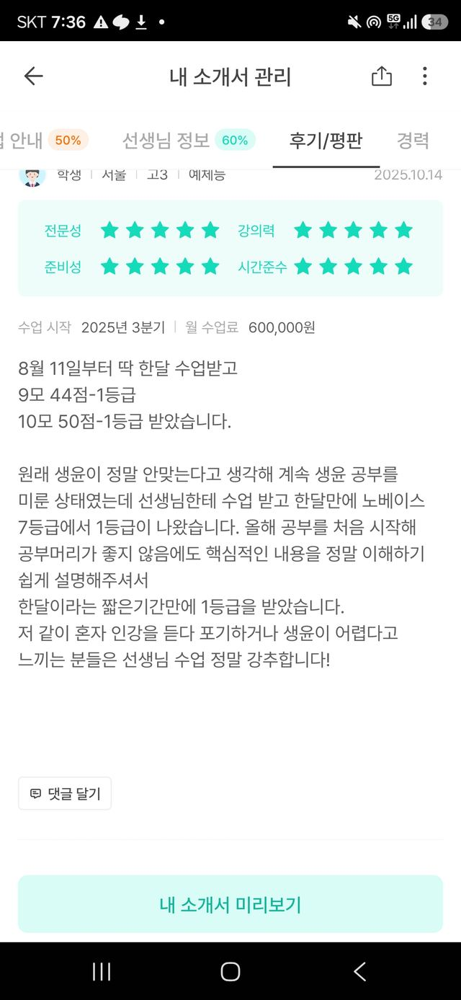
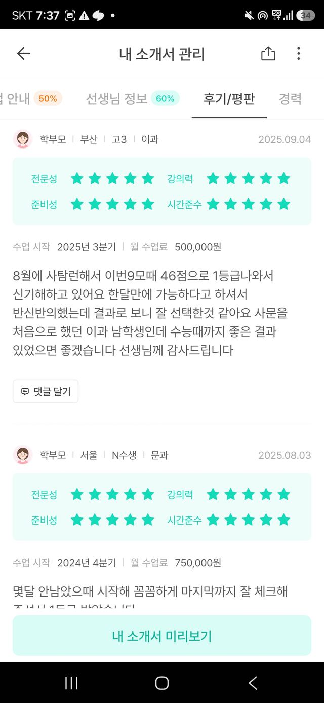
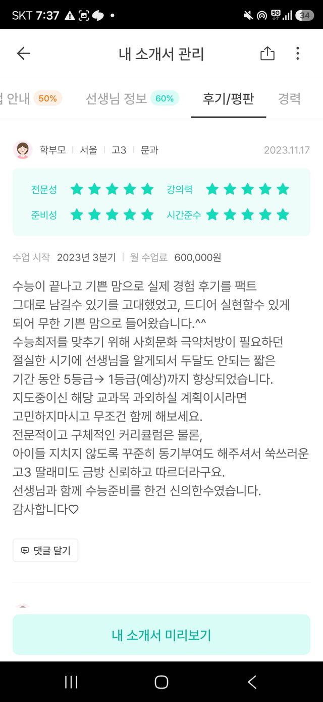
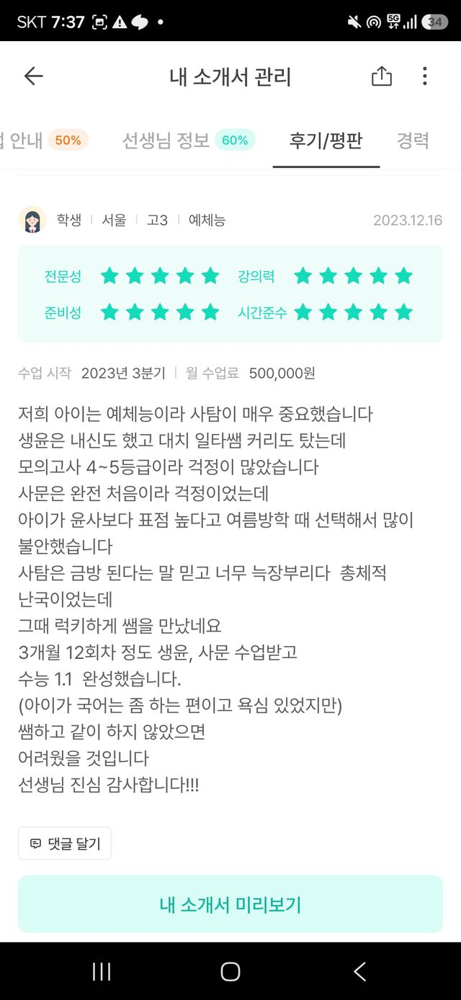
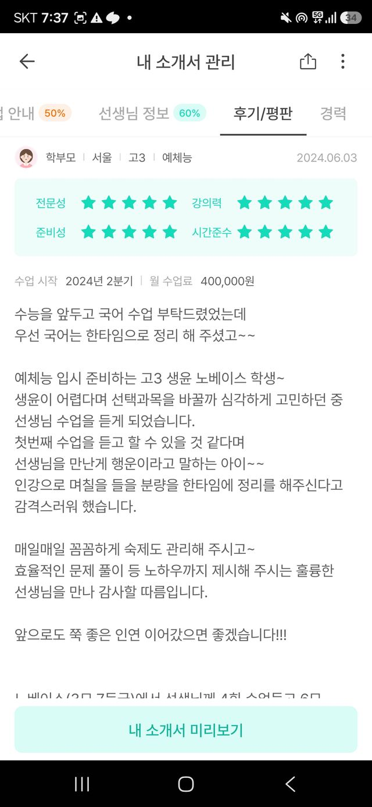
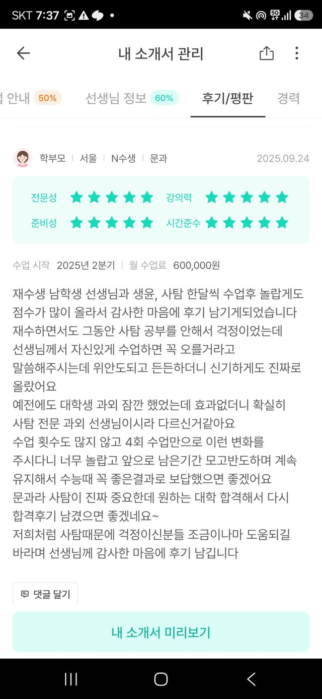

작년 데이터로 증명
느낌이 아니라,
느낌이 아니라,
작년 학생들 점수로.
작년 불꽃캠프 학생들의 6월→9월 사문 모의고사 등급 변화를 그대로 정리했습니다.
불꽃캠프 다닌 학생
사문 +0.74등급
꾸준히(5주 이상) 다닌 학생은 평균 +1.9등급. 오래 다닐수록 더 올랐습니다.
안 다닌 학생
사문 −0.33등급
같은 기간 혼자 한 학생들은 오히려 평균적으로 등급이 내려갔습니다.
고3 · 사문 · 노베
7등급→ 1등급
5주 참여 · 6월→9월
N수 · 사문
5등급→ 1등급
8주 참여 · 6월→9월
고3 · 사문
4등급→ 2등급
9주 참여 · 6월→9월
※ 작년 6→9월 사문 모의고사 자체 집계 기준 · 개인 사례는 모든 학생의 결과를 보장하지 않습니다.
실제 후기
김과외에 쌓인
김과외에 쌓인
실제 후기입니다.
김과외 앱 후기 화면을 그대로 캡처했습니다. 작성자는 앱 정책상 익명(학생/학부모·지역·학년)으로 표시됩니다. 2023년부터 지금까지 쌓인 기록입니다.

생윤 노베 7등급 → 한 달 뒤 10모 50점학생 · 고3 예체능 · 2025.10

8월 사탐런 이과생, 9모 46점 1등급학부모 · 고3 이과 · 2025.09

사회문화 5등급 → 두 달 만에 1등급(예상)학부모 · 고3 문과 · 2023.11

생윤·사문 3개월 12회차, 수능 1.1학생 · 고3 예체능 · 2023.12

생윤 노베이스, 매일 숙제까지 관리학부모 · 고3 예체능 · 2024.06

"대학생 과외와 확실히 달라요" — 4회 만의 변화학부모 · N수생 문과 · 2025.09
※ 김과외 앱 '후기/평판' 화면 캡처 원본입니다. 개인 사례이며 모든 학생의 결과를 보장하지 않습니다. ← 옆으로 넘겨보세요